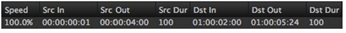
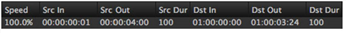

Modify
Using
Result
Dst In
Move
Destination
Adjusts the event’s Dst In and Out by the same amount, moving the clip instance’s position on the timeline by the specified amount, while maintaining Speed.
Before and after a 2 second Dst In increase:


Dst Out
Move
Destination
Adjusts the event’s Dst Out and In by the same amount, moving the clip instance’s position on the timeline by the specified amount, while maintaining Speed.
Before and after a 2 second Dst Out increase:
